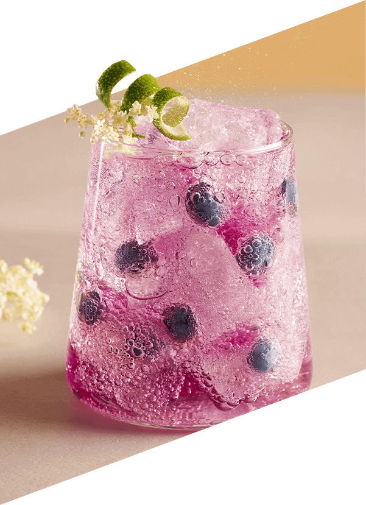
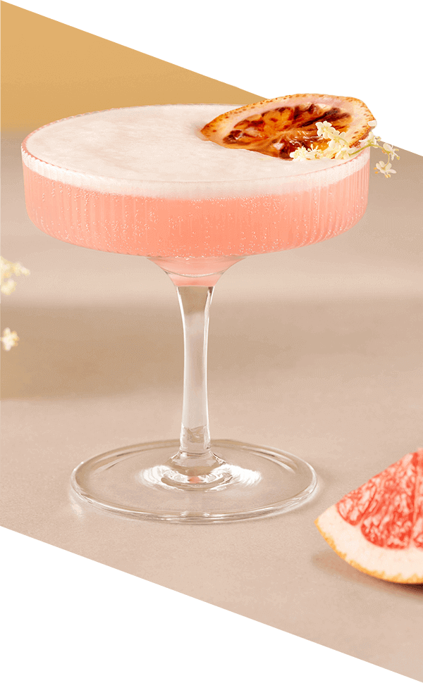

Grejpfrut & Kwiat Czarnego Bzu
Wyrafinowana kompozycja smaków rześkiego grejpfruta i romantycznych kwiatów czarnego bzu oczaruje Twoich gości
Poczuj smak wakacji w każdej kropli! Nowa baza SodaStream Crafted Grejpfrut & Kwiat Czarnego Bzu to niepowtarzalne połączenie kwaśnych nut, charakterystycznych dla grejpfruta, przełamanych zbalansowaną słodyczą kwiatów czarnego bzu, które otworzy przed Tobą świat niezwykłych doznań smakowych.

Perfekcyjne koktajle i moktajle na 1, 2, tssst!
Wyobraź sobie... ...poranek na tarasie. Słońce ledwo wzeszło, a Ty już cieszysz się chłodnym moktajlem z grejpfruta i czarnego bzu. Energia na cały dzień gwarantowana! ...romantyczny wieczór. Zmysłowy aromat grejpfruta i czarnego bzu w połączeniu z alkoholem stworzy niepowtarzalny klimat.
Orzeźwiające w dzień
wyrafinowane nocą!
Z bazą SodaStream Crafted Grejpfrut & Kwiat Czarnego Bzu każda chwila smakuje wyjątkowo!
Z SodaStream Crafted możesz wszystko! Wystarczy dodać wodę gazowaną i puścić wodze fantazji. Wyobraź sobie popołudnie z przyjaciółmi. Śmiech, rozmowy i orzeźwiające napoje z SodaStream. Wasz sekretny przepis na udane spotkanie? Grejpfrut, czarny bez i szczypta dobrego humoru!
Piękno tkwi w prostocie
gazuj
miksuj
smakuj
Stwórz idealnie musującą wodę i pyszne napoje, dopasowane do Twojego gustu.
Kontroluj poziom bąbelków i słodyczy, eksperymentuj ze smakami i ciesz się świeżością w każdej chwili.
Day
Moktajl:
Blueberry Elderflower Fizz
Składniki:
- 20 ml bazy SodaStream Grejpfrut & Kwiat Czarnego Bzu
- 70 ml wody gazowanej SodaStream
- 10 ml musu jagodowego
- 20 ml soku z cytryny
- Kostki lodu
Dekoracja:
Skórka limonki, kwiat czarnego bzuPrzygotowanie:
- Kieliszek do wina wypełnij kostkami lodu i dodaj 70 ml Prosecco.
- Dodaj 70 ml bazy SodaStream Crafted Grejpfrut & Kwiat Czarnego Bzu.
- Wyciśnij sok z połowy limonki.
- Za pomocą łyżki barmańskiej, delikatnie wymieszaj składniki w kieliszku.
- Dopełnij wodą gazowaną i udekoruj kawałkiem grejpfruta i kwiatami czarnego bzu.
Night


Koktajl:
Elderflower Prosecco Spritz
Składniki:
- 70 ml bazy SodaStream Grejpfrut & Kwiat Czarnego Bzu
- 20 ml wody gazowanej SodaStream
- 70 ml Prosecco
- 20 ml soku z limonki
- Kostki lodu
Dekoracja:
Kwiat czarnego bzu, kawałek grejpfrutaPrzygotowanie:
- W niskiej, pękatej szklance umieść borówki i kilka kostek lodu.
- Do szklanki dodaj 10 ml musu jagodowego, 20 ml soku z cytryny i 20 ml bazy
- SodaStream Crafted Grejprut & Kwiat Czarnego Bzu.
- Uzupełnij wodą gazowaną.
- Delikatnie wymieszaj napój łyżką barmańską i udekoruj kwiatami czarnego bzu i skórką z limonki.
Grejpfrut & Kwiat Czarnego Bzu
Sztuka Tworzenia Lemoniady
Rozkosz dla zmysłów! Połączenie grejpfruta z subtelnym kwiatem czarnego bzu w jednym wyjątkowym napoju? Dzięki nowej bazie SodaStream Crafted Grejpfrut & Kwiat Czarnego Bzu to możliwe! Twórz oryginalne moktajle i koktajle lub dodaj do wody gazowanej, by cieszyć się smakiem lata w każdej chwili.

Prosto, szybko i smakowicie! Z SodaStream Crafted przygotowanie wyjątkowych napojów to kwestia chwili. Woda gazowana, baza SodaStream Crafted Grejpfrut & Kwiat Czarnego Bzu i... napój gotowy! Chcesz czegoś mocniejszego? Dodaj alkohol i zachwyć gości.
Więcej smaku, więcej przyjemności! Jedna butelka bazy SodaStream Crafted (330 ml) wystarcza do przygotowania do 20 porcji przepysznych napojów! Ciesz się wyjątkowymi momentami z bliskimi, nie nadwyrężając portfela.
Jak stworzyć drink z SodaStream Crafted? Zalecane proporcje

Moktajl: 1 część bazy + 10 części wody gazowanej.

Koktajl: 1 część bazy + 10 części wody gazowanej + 2 części alkoholu.
Twórz, mieszaj, smakuj!
SodaStream Crafted
Miksologia w Twojej kuchni!
Zamień swoją kuchnię w przestrzeń pełną smakowych możliwości! Twórz orzeźwiające moktajle i lemoniady na dzień, a wieczorem zaskocz wszystkich wyrafinowanymi koktajlami. Uzupełnione ginem lub dowolnym alkoholem, napoje z SodaStream Crafted nabierają temperamentu i doskonale sprawdzą się na garden party, grillu, spotkaniu z przyjaciółmi czy nocnej imprezie.
Jedna SodaStream – wiele możliwości
Odkryj bogactwo smaków z SodaStream! Wybieraj spośród klasycznych propozycji jak Pepsi, Mirinda, Cola lub stwórz orzeźwiające napoje owocowe, także w wersji bez dodatku cukru. To Ty decydujesz, co znajdzie się w Twojej szklance!

Kreuj Smaki. Twórz Niezapomniane Chwile.